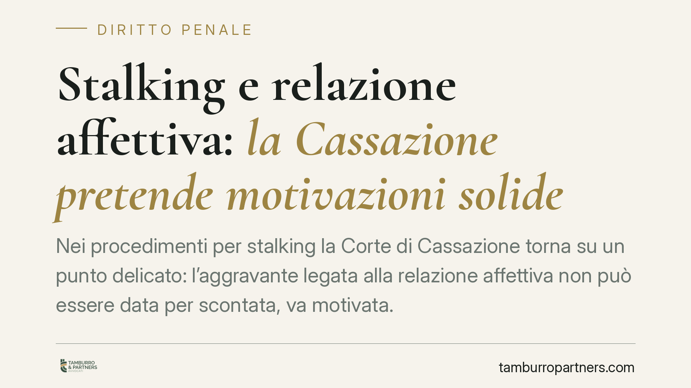

Stalking e relazione affettiva: la Cassazione pretende motivazioni solide
Nei procedimenti per stalking la Corte di Cassazione torna su un punto delicato: l'aggravante legata alla relazione affettiva non può essere data per scontata, va motivata. E il nesso causale tra condotta e conseguenze dannose richiede prova rigorosa. Un principio che incide su accusa e difesa, soprattutto nelle relazioni brevi o appena concluse.

Il caso e una premessa sulla fonte
La pronuncia segnalata affronta un tema ricorrente: l'applicazione dell'aggravante della relazione affettiva nel reato di atti persecutori (art. 612-bis c.p.) e l'onere motivazionale che grava sui giudici di merito.
Una precisazione doverosa. Il numero di sentenza e l'anno indicati dalla fonte divulgativa (Cass. n. 35232/2026) non risultano al momento verificabili sui repertori ufficiali (CED Cassazione, Italgiure) e presentano una datazione anomala. Trattiamo quindi la notizia per il principio di diritto che veicola, non per il dato identificativo della pronuncia, che va confermato prima di qualsiasi utilizzo in sede difensiva.
Inquadramento normativo
L'art. 612-bis c.p., introdotto dalla L. 38/2009, punisce chi con condotte reiterate di minaccia o molestia cagiona nella vittima uno di tre eventi alternativi: un perdurante e grave stato di ansia o di paura; un fondato timore per la propria incolumità o per quella di persone vicine; una modifica delle abitudini di vita.
La norma è stata più volte riformata. La L. 69/2019 (cosiddetto "codice rosso") ha inasprito la cornice edittale e ridisegnato le aggravanti; il D.L. 11/2023, convertito in L. 122/2023, è intervenuto nuovamente sul quadro sanzionatorio e cautelare. Nella versione vigente, la pena è aumentata quando il fatto è commesso dal coniuge, anche separato o divorziato, o da persona che è o è stata legata da relazione affettiva alla persona offesa (aggravante collocata nel secondo comma).
Il principio: motivare la relazione affettiva
Il punto centrale è questo: l'aggravante della relazione affettiva non è automatica. Il giudice deve dare conto, con motivazione specifica, dell'effettiva esistenza di un legame affettivo rilevante. Una conoscenza occasionale, una frequentazione episodica o un "amore estivo" di breve durata non integrano, di per sé, il presupposto dell'aggravante: occorre verificare natura, intensità e continuità del rapporto.
La Corte, su questo profilo, non nega il reato: nega che l'aggravante sia stata dimostrata. È un annullamento con rinvio, non un'assoluzione nel merito. Il giudizio ricomincia su quel punto, con l'obbligo di una motivazione adeguata.
Il nesso causale: attenzione a non confondere i piani
Un secondo chiarimento riguarda le conseguenze dannose. Va distinto nettamente l'evento del reato dal danno biologico risarcitorio.
L'evento penalmente rilevante è, in alternativa, lo stato di ansia o paura, il timore fondato o la modifica delle abitudini di vita: elementi che vanno provati, ma che attengono alla fattispecie penale.
Il danno biologico in senso medico-legale – una lesione psichica accertabile – opera invece sul piano civilistico e risarcitorio. Quando lo si invoca, occorre dimostrare il nesso causale tra le condotte persecutorie e la compromissione della salute. Non basta affermarlo: serve prova tecnica del collegamento. Confondere i due piani genera errori sia nell'imputazione sia nella quantificazione del risarcimento.
Implicazioni pratiche
Per la persona offesa, l'insegnamento è che denuncia e documentazione devono essere circostanziate: la genericità indebolisce sia la contestazione dell'aggravante sia la richiesta risarcitoria.
Per l'imputato, emerge uno spazio difensivo concreto: contestare la qualificazione del rapporto come "relazione affettiva" e pretendere che il danno sia provato nel suo collegamento causale, non presunto.
Cosa fare in concreto
Se sei persona offesa:
- Documenta la natura e la durata del rapporto (messaggi, foto, testimonianze) se intendi far valere l'aggravante.
- Conserva ogni traccia delle condotte persecutorie, con date e contesto.
- Richiedi una valutazione medico-specialistica se lamenti conseguenze sulla salute, per supportare il nesso causale.
Se sei indagato o imputato:
- Verifica come è stata qualificata la relazione negli atti: contesta l'automatismo dell'aggravante.
- Esamina la prova del danno e del suo collegamento con le condotte contestate.
In entrambi i casi, consigliamo di far esaminare gli atti da un difensore prima di assumere iniziative: la tenuta di accusa e difesa si gioca sulla precisione, non sulle affermazioni generiche.
Contributo informativo a cura di Tamburro & Partners Avvocati – Avv. Giuseppe Tamburro. Non costituisce parere legale.
Ogni condominio ha una storia a sé.
Se gestisci un'amministrazione e vuoi un confronto su una specifica questione condominiale, scrivi allo studio. Ti rispondiamo entro un giorno lavorativo.